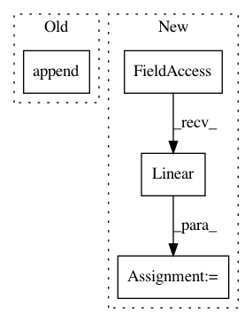

06bade5c5fc40c0241ae5960b6a0dd1766e7732b,chainerrl/q_functions/state_action_q_functions.py,FCSAQFunction,__init__,#FCSAQFunction#Any#Any#Any#Any#Any#,46
Before Change
for i in range(self.n_hidden_layers - 1):
layers.append(
L.Linear(self.n_hidden_channels, self.n_hidden_channels))
layers.append(L.Linear(self.n_hidden_channels, 1))
super().__init__(*layers)
self.output = layers[-1]
def __call__(self, state, action, test=False):
After Change
Args:
n_dim_obs: number of dimensions of observation space
n_dim_action: number of dimensions of action space
n_hidden_channels: number of hidden channels
n_hidden_layers: number of hidden layers
In pattern: SUPERPATTERN
Frequency: 3
Non-data size: 4
Instances
Project Name: chainer/chainerrl
Commit Name: 06bade5c5fc40c0241ae5960b6a0dd1766e7732b
Time: 2017-02-28
Author: muupan@gmail.com
File Name: chainerrl/q_functions/state_action_q_functions.py
Class Name: FCSAQFunction
Method Name: __init__
Project Name: chainer/chainerrl
Commit Name: 939512c36bf89a9ddb02b01818018e4fbfb9bef1
Time: 2017-02-22
Author: muupan@gmail.com
File Name: chainerrl/q_functions/state_action_q_functions.py
Class Name: FCSAQFunction
Method Name: __init__
Project Name: facebookresearch/Horizon
Commit Name: 462a933b3defaf7f10a1e1023b9d81b5e92e3227
Time: 2020-02-29
Author: czxttkl@fb.com
File Name: ml/rl/models/seq2slate.py
Class Name: BaselineNet
Method Name: __init__